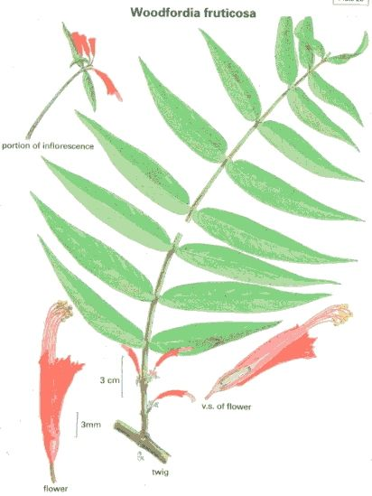

Woodfordia
fruticosa
Kurz.
Taxonomic Details

----- Correct Name
----- Classification
----- Synonyms
----- Common Names
Other Biological Details
----- Habit and Habitat
----- Diagnostic Features
----- Reproductive Biology
---------- Breeding System
---------- Phenology
---------- Pollinators
---------- Seed Biology
----------Seed Germination
------ Cultivation
----- Major Pests and Diseases
Economic Potential and Uses
----- Parts Used
----- Uses
----- Harvesting Practices
----- Produce and Products
----- Chemistry
----- Processing Techniques
----- Other uses
----- Economic Potential to the
Country
----- Export Potential
Miscellaneous Information
Literature
Taxonomic
Details
Correct Name :
Woodfordia fruticosa Kurz.

Family : Lythraceae
Synonyms : Woodfordia floribunda
Salisb.
Common Names :
English: Fireflame Bush
Sanskrit: Dhataki, Agnijwala
Hindi: Dawi, thawi, santha dhaula, dhaura, dhai
Bengali: Dhai, dawai
Telugu: Pagadam,Gaddaisinka
Kannada: Are
Back to Top
Other
Biological Details
HABIT & HABITAT:
A much - branched, beautiful shrub, with fluted stems and long spreading
branches, 1-3 m. high, rarely up to 7 m., commonly occurring along slopes of
ghats, along streams, Deciduous forest, deciduous forests, dense forest, dry
hills, dry
mixed forests, Forests, Hill forests, Hill slopes, hills, Light forests, Mixed
forests, none, Open
and Dense Forest, open forest, open slopes, Plains, Road sides, Rocky places,
Sal forests, Slopes, Tropical Forests, Walls of old building, waste land,
BioticZone: Himalaya, Hindukush himalaya, Konkan plain,
none, Subtropical forests, tropics, West Coast, Western Ghats,
State: Andhra Pradesh, Arunachal Pradesh, Bihar, Goa, Diu, Daman
Himachal Pradesh, Karnataka, Madhya pradesh, Maharashtra, none, Rajasthan, Uttar
Pradesh, West
Bengal,
Availability :
Status :
Back to Top
DIAGNOSTIC FEATURES
A much - branched, beautiful shrub, with fluted stems and long spreading branches,
1-3 m. high, rarely up to 7 m.. A much - branched, beautiful shrub, with fluted
stems and long, spreading branches, 1-2 m. high, rarely up to 7 m.. Bark reddish
brown, peeling off in thin, fibrous strips; leaves lanceolate, oblong-lanceolate
or ovate - lanceolate; flowers numerous, brilliant red in dense axillary paniculate
- cymose clusters; capsules ellipsoid, membranous ; seeds brown, minute, smooth,
obovate.
Back to Top
REPRODUCTIVE BIOLOGY
Breeding System :
Phenology :
The flowering occurs during December-April
and fruiting occurs during January - June.
Pollinators:
Seed Biology :
Seed Germination:
Cultivation:
Back to Top
MAJOR PESTS & DISEASES
Pests:
Diseases:
Back to Top
Economic
Potential and Uses
Parts used:
Flower,
Leaves, Dried fruit flowers, buds, inflorescence, wood, stem
Uses:
- The flower nectar are employed for making a cooling
drink.
Harvesting
Practices
Produce and Products :
Gum extracted
from the stem, nectar from the flowers employed for making a cooling drink, Bark
contain tannin and which is extensively used in the tanning of crust-leather.
Back to Top
Chemistry
Back to Top
Processing Techniques
Back to Top
Other Uses
-
The shrub may be
planted for clothing landslips.
-
It is also a useful soil-improver and an efficient
nurse to many other species, which freely spring up under its cover.
-
The flowers
contain high tanning material, which proved useful in heavy leather tannage
by suitable blending with catechol type of tannin.
-
The leaves contain 12-20
per cent tannin and can possibly be exploited for the production of tan-extracts.
-
The bark contains 20-27 per cent tannin and has been extensively used in the
tanning of crust-leathers. The tannin penetrates and imparts a fine pale-cream
colour to the leather.
-
The dried flowers are credited with stimulant and astringent
properties and are available in the market. They are often added to the Ayurvedic
Arishtas to cause alcoholic fermentation. The commercial drug consists of dried
fruits flowers, buds and broken pieces of inflorscences.
-
It is much used in
bowel complaints and haemorrhages and is also administered in menorrhagia and
seminal weakness.
-
An extract of the plant was found to stimulate the contraction
of the intestinal use of the drug in bowel complaints.
-
The dried flowers are
powdered and sprinkled over ulcers and wounds to diminish discharge and promote
granulation. The flowers also enter into an ointment used on the pustules of
smallpox. The wood is used for fuel, though it is also suitable for axe-handles.
The gum from stem is extracted and employed for coating the parts of the fabric
which are not to be dyed.
- This is a drug largely used in native
medicine. This enters into the composition of many preparations, decoctions,
churnas and ghritas for various diseases, but chiefly dysentery and diarrhoea
by reason of its being highly astringent. Possibly the therapeutic properties
of Myla and Maliththa are the same.
Economical
Potential to the country
Back to Top
Export Potential
Back to Top
Miscellaneous
Information
Back to Top
Literature
- Sasya Sahyadri- A CD
on Plants of Western Ghats, 2003, K.N. Ganeshaiah.
Back to Top